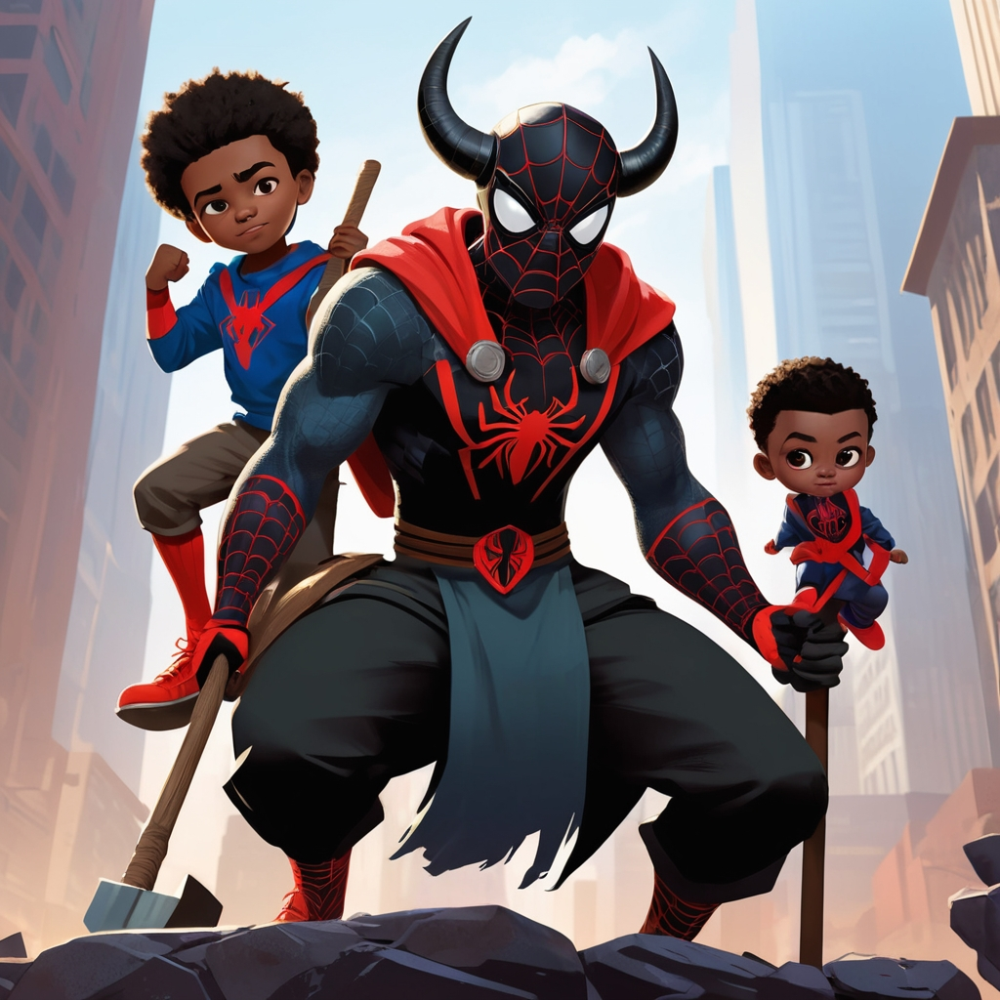

Biography
Mystic Spider is a legendary protector from Africa, gifted with mystical powers and the spirit of the spider. He wears a mystical horn, symbolizing his connection to ancient African deities.
Powers and Abilities
- Web Manipulation: Mystic Spider can produce and control webs from his body.
- Enhanced Senses: His spider-sense gives him heightened awareness of danger.
- Superhuman Agility: He can perform acrobatic feats beyond human capability.
- Mystical Horn: The horn grants him powers of communication with spirits and control over natural forces.
- Wall-Crawling: Like all spiders, he can cling to and crawl on walls and ceilings.
Affiliations
Mystic Spider is a guardian of his homeland and is revered by his people as a protector and warrior.